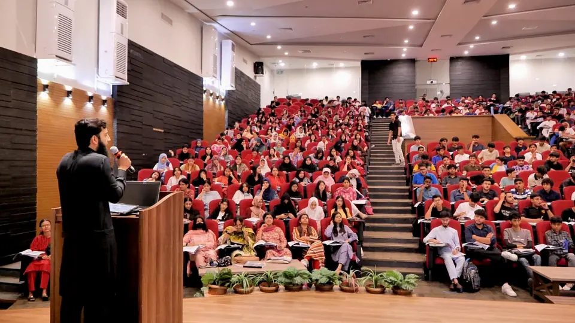
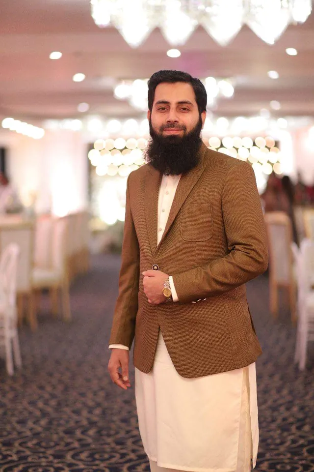
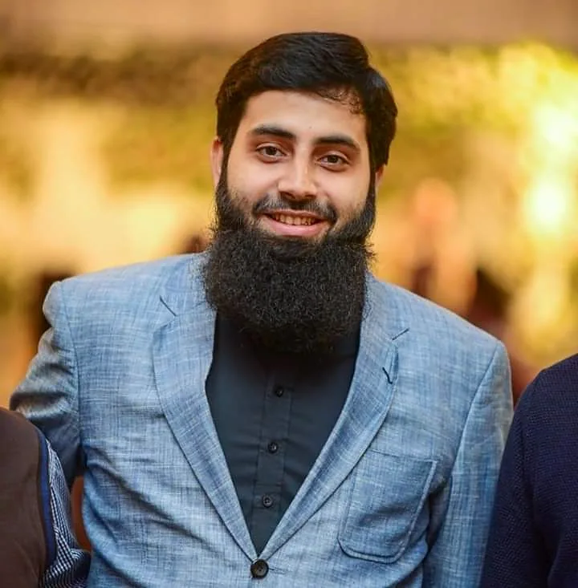

The passages and Hadiths, secure
All 15 passages and 20 Hadiths, learned by theme and revised until they come out in the exam without a pause.
O Level & IGCSE Islamiyat · MFM
15+ years teaching O Level and IGCSE Islamiyat, in Karachi and online. Evidence first, then why it matters.
A Cambridge-certified educationist with more than fifteen years in the classroom, he has mentored over seven thousand students. Born and raised in Karachi, he is a gold medalist in BSCS from IBA Karachi and holds Master’s degrees in Computer Science and Islamic Studies. His aim is to revive the love of Allah, His Prophet ﷺ and Islam in the hearts of young people, so they carry the Prophet’s ﷺ example into the 21st century.
Everything on this page is from Sir Fazil’s own profile, public channel and course listings.




Students taught each session since 2012, from Sir Fazil’s own record. It began with Teach For Pakistan at a government school in Gizri.
| Session | Where | Students |
|---|
Where Sir Fazil teaches now, and the schools he has taught at before.
All 15 passages and 20 Hadiths, learned by theme and revised until they come out in the exam without a pause.
The Seerah and the Caliphs as one connected story, with the dates and numbers that lift a part (a) answer.
The right verse or Hadith for each point, quoted briefly and accurately.
Why it matters to Muslims today, explained with a real example, not another paragraph of history.
Practised against the mark scheme, with exam technique drilled alongside the content.
Jauhar, Gulshan, North Nazimabad, Defence and Bahadurabad.
Live batches for students across Pakistan and abroad.
A topical recorded course for 2058 and 0493 on LearnedGuys, about 54 hours.